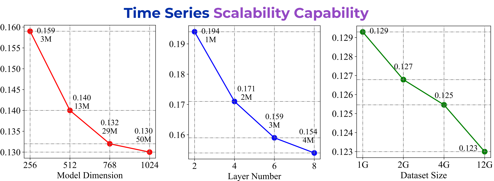

欢迎使用Timer-深度时序分析基础模型
Timer是清华大学软件学院在时序分析领域深耕的结晶。我们的工作受到大型语言模型对自然语言处理变革性影响的启发，在时间序列领域使用大模型技术创建了该领域首个真正意义上的大模型，并且在大量数据集上进行预训练，并依靠显著的少样本能力对特定任务进行微调，从而赋予深度模型强大的通用能力。我们的模型拥有以下特点：
- 基于大规模预训练的丰富知识库
- 多样化的下游任务以适应复杂的行业场景
- 强大的分析能力和对真实世界数据的理解能力

大规模高质量时序数据集
为了追求业内卓越的分析能力，我们精心构建了大规模的预训练数据集，该数据集兼有庞大的体量、卓越的质量和丰富的领域等重要特质，这为Timer提供了一个庞大的高水准数据知识库，从而使其在众多任务中具有令人印象深刻的强大泛化能力。


一站式通用分析解决方案
基于我们模型强大的功能，我们设计了一套完备的解决方案。这些解决方案使您能够通过多种方法访问我们大型模型的高级分析服务，包括在线API访问、基于平台的调用，乃至定制的私人部署等多种选项。
为在线调用而设计的前端API即将推出，敬请期待。
场景服务
Timer提供全方面的时序分析能力，旨在帮助您企业和研究人员释放其时间序列数据的全部潜力。我们的Timer模型在大量数据集上进行了预训练，并针对特定任务进行了微调，为一系列可能的实际应用场景提供通用解决方案。
效果展示
Timer拥有很强的泛化性，能够适应多种不同领域和场景的真实时序数据，在各种任务上拥有优异的处理效果，这里展现了Timer在不同数据上的真实表现。
以下可视化结果均来自极低样本使用率下的微调结果。
- 全部
- 时序预测
- 数据填补
- 异常检测


联系我们
随着研究的进展，我们的模型功能正在快速迭代。如果您对我们的工作感兴趣，请主动与我们联系。
地址
北京市海淀区清华大学软件学院东配楼11区11-419室